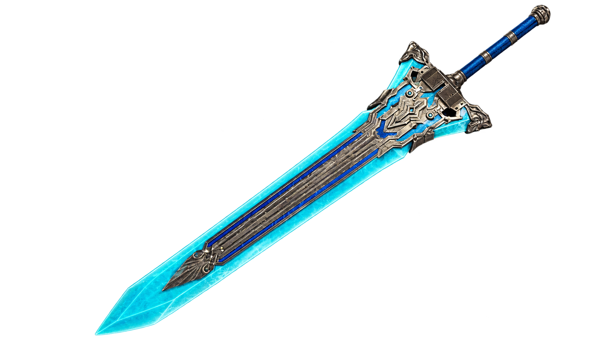

Cloud Strife is the main character of Final Fantasy VII and is known for using extremely large swords. His most recognizable weapon is the Buster Sword, which has become one of the most famous weapons in video games. Cloud uses his swords for powerful physical attacks against enemies throughout the game. Different weapons can also provide Cloud with different abilities and statistics.
The Buster Sword is Cloud's starting weapon and is strongly connected to his story. However, Cloud can obtain many other swords as the game progresses. Weapons such as the Hardedge and Mythril Saber offer different strengths and abilities. Players can choose different weapons depending on the type of combat style they prefer.


| Weapon | Description | Special Ability |
|---|---|---|
| Buster Sword | Cloud's iconic starting weapon | High damage, limited special abilities, but a classic |
| Crystal Sword | A powerful magical sword | Elemental damage, healing properties |
| Hardedge Sword | A durable sword with high attack power | Increased durability, balanced stats |